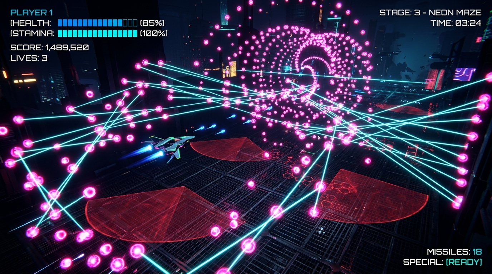

円形（ドーナツ型）ステージの制限された立ち回りと、弾丸同士がレーザーで結ばれリアルタイムに伸縮・回転する「弾リンクシステム」を特徴とする3Dボスバトルアクションゲーム。
本プロジェクトは、プレイヤーが円形（ドーナツ型）のステージ内で、ボスの激しい弾幕や移動制限レーザーをジャンプ・ダッシュ無敵回避などを駆使してかいくぐりながら、攻撃を叩き込んでボスを撃破することを目指す3D弾幕アクションゲームです。
各マネージャーのシングルトン設計による統括、プレイヤー制御数学、ボス攻撃時のデータ構造の統一、リアルタイムなベクトルの LookRotation によるレーザーリンク制御など、Unity/C#における設計・数学実装の両面から作り込んでいます。
Unity 2022.3 (C#)
ドーナツ型 (内径10 / 外径30)
9モジュール
PC / WebGLデプロイ対応

バトルフィールドは中心座標からの内径（10f）と外径（30f）で制限されています。プレイヤーは落下や無限の逃げが許されず、常にボスを中心とした同心円上で回避を行うため、緊迫感のある間合い管理が求められます。
弾と弾の間に動的なレーザー判定線を張る機能。ボスが射出した複数の弾が移動すると、その間を繋ぐレーザーもリアルタイムで伸縮・回転。プレイヤーの移動経路を分断し、ダッシュ無敵やジャンプのタイミングを誘発します。
ボスの残りHP割合を監視し、段階的に攻撃パターンの発狂・強化を行います。UIの警告表示メッシュ（赤透過の扇形）と連動し、ボスの行動アルゴリズムが動的に切り替わります。
ボスとプレイヤーの相対距離を毎フレーム追従し、常に「プレイヤーの背後からボスを見据える」アングルに自動で回転・位置補正する lock-on カメラ。3D空間特有の視界不良による被弾を劇的に減らします。
本プロジェクトの各役割のクラス関係図です。SVG上のクラス名を選択すると、右パネルで機能の詳細やC#スクリプトの役割を確認できます。
連携図の中のモジュールをクリックすると、この部分に詳細な説明と主要メンバが表示されます。
// BulletLinkLine.cs - 二つの弾の座標をリアルタイム監視し、レーザーのコライダーを伸縮・回転
void Update()
{
if (bulletA_ == null || bulletB_ == null)
{
Destroy(gameObject);
return;
}
Vector3 posA = bulletA_.transform.position;
Vector3 posB = bulletB_.transform.position;
Vector3 dir = posB - posA;
// ２点の中間座標を位置に指定
transform.position = (posA + posB) * 0.5f;
// LookRotationによりレーザーを相手弾の方向に向ける
if (dir != Vector3.zero)
{
transform.rotation = Quaternion.LookRotation(dir);
}
// スケールを厚さおよび「二点間の距離 (magnitude)」に補正
transform.localScale = new Vector3(thickness_, thickness_, dir.magnitude);
}// PlayerController.cs - 同心円（ドーナツ型）ステージの境界内に自機を制限する
private void ClampPositionToStage()
{
Vector3 relativePosition = transform.position - stageCenter_;
Vector3 horizontalRelativePos = new Vector3(relativePosition.x, 0f, relativePosition.z);
float distanceFromCenter = horizontalRelativePos.magnitude;
// 中心点の例外回避
if (distanceFromCenter == 0f)
{
horizontalRelativePos = Vector3.forward * stageInnerRadius_;
transform.position = stageCenter_ + new Vector3(horizontalRelativePos.x, relativePosition.y, horizontalRelativePos.z);
return;
}
// 中心からの距離を最小半径と最大半径の間にクランプ
float clampedDistance = Mathf.Clamp(distanceFromCenter, stageInnerRadius_, stageOuterRadius_);
// 距離が変わった（境界線を越えた）場合のみ再計算して適用
if (clampedDistance != distanceFromCenter)
{
Vector3 clampedHorizontalPosition = horizontalRelativePos.normalized * clampedDistance;
transform.position = stageCenter_ + new Vector3(clampedHorizontalPosition.x, relativePosition.y, clampedHorizontalPosition.z);
}
}// PlayerController.cs - 落下・離脱時に、放物線補間で初期地点へ自動回帰させる (Update処理)
private void UpdateReturning()
{
returnTimer_ += Time.deltaTime;
float t = Mathf.Clamp01(returnTimer_ / returnDuration_);
// 水平位置の線形補間 (Lerp)
Vector3 horizontalPosition = Vector3.Lerp(returnStartPosition_, startPosition_, t);
// 放物線（山なり）の高さ計算: y = 4 * height * t * (1 - t)
float height = 4f * parabolicHeight_ * t * (1f - t);
// 高さパラメータを加算して位置を適用
transform.position = new Vector3(horizontalPosition.x, horizontalPosition.y + height, horizontalPosition.z);
// 進行方向へのスムースな回転
Vector3 moveDirection = (startPosition_ - returnStartPosition_);
moveDirection.y = 0f;
if (moveDirection != Vector3.zero)
{
Quaternion targetRot = Quaternion.LookRotation(moveDirection, Vector3.up);
transform.rotation = Quaternion.RotateTowards(transform.rotation, targetRot, Mathf.Infinity * Time.deltaTime);
}
// 帰還完了時
if (returnTimer_ >= returnDuration_)
{
transform.position = startPosition_;
transform.rotation = startRotation_;
isReturning_ = false;
}
}ゲーム内の SoundManager 挙動を Web Audio API を用いてエミュレートしたインタラクティブコンソール。BGMを選択して再生し、効果音（SE）を鳴らすと、上部のリアルタイム波形描画領域に反映されます。